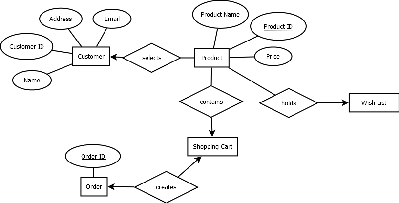
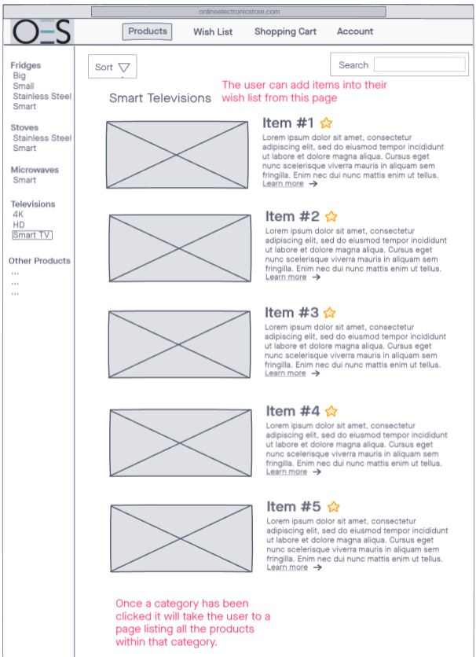

Product List (database) - MVF 4 for OES website
Team member in charge of MVF – Arjun Sharma
MVF description and low fidelity mock-up
The purpose of the product list is to have an interface that displays all the categories of products and also all the individual variants of these categories. This feature is a requirement from a user interface standpoint as it will create a smoother experience for the user when navigating our website.
Along with the product list I will also be creating a database to contain all the product information that will be displayed in the product list.
The following low-fidelity diagram was made using inVision and highlights the basic layout of what the product list will look like when implemented into our website.

System context diagram and high-fidelity mockups
In order to visualise the database, I have created an Entity Relationship Diagram as a design artifact for this mvf:
Basic System context diagram for the product list:
In the High fidelity mockups I have added a page that displays all the categories in a single area that acts as a focus point for the user to navigate. This page also includes a section highlighting new products that were recently added to our database.
User stories
User story 1 – Harry
Scenario: Harry is using OES for the first time and wants to buy a microwave. He wants be able to view all the available microwaves on a single page. Harry is looking for a specific priced microwave and would prefer the colour black.
Acceptance criteria:
Harry wishes to navigate to the microwave category.
Harry wishes to view all the available microwaves on a single page.
Harry wishes to sort by price and colour on this page.
User story 2 – Bill
Scenario: Bill just bought a new house and need to get some electronic good to fill it with. He needs multiple items of various categories.
Acceptance criteria:
Bill wishes to view all categories on a single page.
Bill wishes to navigate into a single category.
Bill wishes to be able to send multiple items of various categories to his shopping cart.